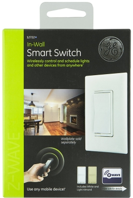

Jasco in-wall switch¶
GE Z-Wave Wireless Smart Lighting Control Smart Switch, On/Off, In-Wall, Includes White & Light Almond Paddles, Works with Amazon Alexa, 12722¶

Operation¶
- Turn ON/OFF manually or remotely via the Z-Wave controller
- Can be Included in multiple Groups and Scenes
- May be used in single pole installation or with up to two GE Add-on switches in 3-way or 4-way wiring configurations
- Compatible with all incandescent and CFL/LED bulbs
- Interchangeable Paddle switch — White & light almond paddle in package
- Uses a standard, decorative-size wall plate for single gang installations (wall plate not included)
- Blue LED indicates switch location in a dark room
- Z-Wave Certified for simple pairing and integrated home automation
- Screw Terminal Installation — requires wiring connections for Line (Hot), Load, Neutral, and Ground. Traveler wire required for 3-way or 4-way installation
Specification¶
- Power: 120 VAC, 60 Hz.
- Signal (Frequency): 908.42 MHz.
- Maximum Loads: 960W, incandescent, 1⁄2 HP Motor or 1800W (15A) Resistive
- Range: Up to 100 feet line of sight between the Wireless Controller and the closest Z-Wave receiver module.
- Operating Temperature Range: 32-104° F (0-40° C)
- For indoor use only.
Inclusion/Exclusion to/from a network¶
- Put controller to Inclusion/Exclusion mode
- Push bottom paddle once. Device will be included/excluded to/from zwave network.
Configuration description¶
- LED light specify
Parameter: 3 (0x03)
Size: 1 byte
- Value:
- 0 = LED on when light off
- 1 = LED on when light on
- 2 = LED off all the time
Default: 0
- Invert switch
Parameter: 4 (0x04)
Size: 1 byte
- Value:
- 0 = ON at the bottom and OFF at the top
- 1 = ON at the top and OFF at the bottom
Default: 0